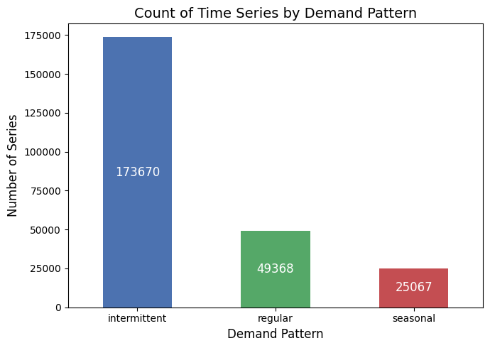
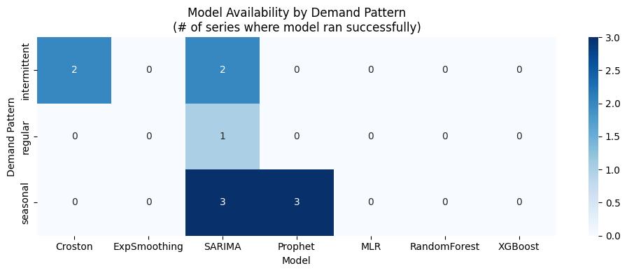
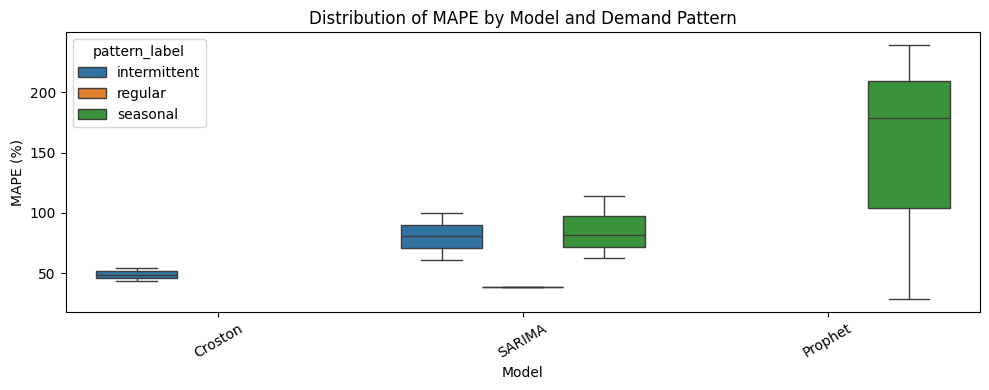
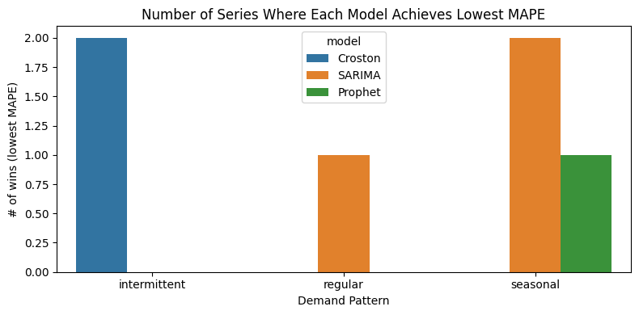
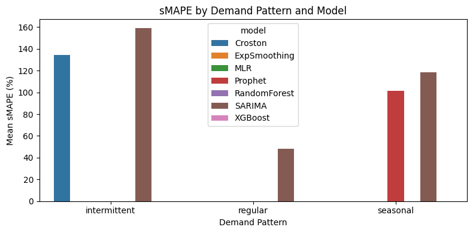

import pandas as pdimport numpy as npimport seaborn as snsimport matplotlib.pyplot as pltfrom sklearn.linear_model import LinearRegressionfrom sklearn.ensemble import RandomForestRegressorfrom xgboost import XGBRegressorfrom statsmodels.tsa.holtwinters import ExponentialSmoothingfrom statsmodels.tsa.statespace.sarimax import SARIMAXfrom prophet import Prophetfrom statsforecast import StatsForecastfrom statsforecast.models import CrostonOptimized
Bad value in file WindowsPath('C:/Users/dell/.matplotlib/stylelib/my_style.mplstyle'), line 8 ('axes.facecolor: #FFFFFF'): Key axes.facecolor: '' does not look like a color arg
monthly = pd.read_csv("../data/processed/monthly_with_pattern.csv", parse_dates=["Date"])sample_ids = pd.read_csv("../data/processed/sample_ids.csv")#Pattern labeling only becomes meaningful after aggregating records into store–item monthly time series.
#df = pd.read_csv("../data/processed/series_pattern_summary.csv")plt.figure(figsize=(7,5))ax = monthly['pattern_label'].value_counts().plot( kind='bar', color=['#4C72B0', '#55A868', '#C44E52'])plt.title("Count of Time Series by Demand Pattern", fontsize=14)plt.xlabel("Demand Pattern", fontsize=12)plt.ylabel("Number of Series", fontsize=12)plt.xticks(rotation=0)for container in ax.containers: ax.bar_label(container, fmt='%d', fontsize=12, label_type='center', color='white')plt.tight_layout()plt.savefig(f"../docs/p1/pattern_counts.png", dpi=300, bbox_inches='tight')plt.show()

monthly["Date"] = pd.to_datetime(monthly["Date"])# ======================================# Select one example series per pattern (first) # ======================================patterns = ["intermittent", "regular", "seasonal"]examples = {}for p in patterns:# Filter all rows for this pattern subset = monthly[monthly["pattern_label"] == p]iflen(subset) ==0:print(f"⚠ No series found for pattern '{p}'")continue# Pick the first StoreId–ItemId combination series_key = subset.groupby(["StoreId", "ItemId"]).size().reset_index().iloc[0] sid = series_key["StoreId"] iid = series_key["ItemId"]# Extract the full time series for that pair ts = monthly[(monthly["StoreId"] == sid) & (monthly["ItemId"] == iid)].sort_values("Date") examples[p] = ts# ======================================# Plotting 3 panels: intermittent, regular, seasonal# ======================================plt.figure(figsize=(15, 4))for i, p inenumerate(patterns):if p notin examples:continue ts = examples[p] plt.subplot(1, 3, i +1) plt.plot(ts["Date"], ts["units"], marker="o", color="#4C72B0") plt.title(f"{p.capitalize()} Demand", fontsize=13) plt.xlabel("") plt.ylabel("Units sold") plt.xticks(rotation=45)plt.tight_layout()plt.savefig(f"../docs/p1/representative_series.png", dpi=300)plt.show()
C:\Users\dell\AppData\Local\Temp\ipykernel_19856\1521666383.py:44: DeprecationWarning: DataFrameGroupBy.apply operated on the grouping columns. This behavior is deprecated, and in a future version of pandas the grouping columns will be excluded from the operation. Either pass `include_groups=False` to exclude the groupings or explicitly select the grouping columns after groupby to silence this warning.
series_metrics = monthly.groupby(["StoreId", "ItemId"]).apply(compute_metrics).reset_index()
def evaluate_models(store, item, pattern, monthly_df=None):""" Fit all candidate models for a given store–item series and return a list of metric dicts. If monthly_df is provided, use it; otherwise fall back to the global 'monthly'. """ df = monthly if monthly_df isNoneelse monthly_df grp = (df[(df["StoreId"] == store) & (df["ItemId"] == item)] .sort_values("Date")) y = grp["units"].to_numpy() dates = grp["Date"].to_numpy()iflen(y) <15:return [] train, test = y[:-3], y[-3:] train_dates = dates[:-3] test_dates = dates[-3:] model_results = []def add_model_result(name, y_true, y_pred): model_results.append({"StoreId": store,"ItemId": item,"pattern_label": pattern,"model": name,"MAPE": mape(y_true, y_pred),"RMSE": rmse(y_true, y_pred),"MAE": mae(y_true, y_pred),"sMAPE": smape(y_true, y_pred),"Bias": bias(y_true, y_pred),"MASE": mase(y_true, y_pred, train), })#Croston (only for intermittent)if pattern =="intermittent":try: df_train = pd.DataFrame({"unique_id": [f"{store}_{item}"] *len(train),"ds": train_dates,"y": train, }) sf = StatsForecast(models=[CrostonOptimized()], freq="MS", n_jobs=1) fc = sf.forecast(df=df_train, h=3) preds = fc["CrostonOptimized"].to_numpy() add_model_result("Croston", test, preds)exceptExceptionas e:print(f"Croston failed for {store}_{item}: {e}")#Exponential Smoothing (only if enough data)iflen(train) >=24:try: model_es = ExponentialSmoothing(train, seasonal="add", seasonal_periods=12) fit_es = model_es.fit(optimized=True) preds = fit_es.forecast(3) add_model_result("ExpSmoothing", test, preds)exceptExceptionas e:print(f"ExpSmoothing failed for {store}_{item}: {e}")#SARIMAtry: model_sa = SARIMAX(train, order=(1,1,1), seasonal_order=(1,1,1,12)) fit_sa = model_sa.fit(disp=False) preds = fit_sa.forecast(3) add_model_result("SARIMA", test, preds)exceptExceptionas e:print(f"SARIMA failed for {store}_{item}: {e}")#Prophet (only for seasonal)if pattern =="seasonal":try: df_prophet = pd.DataFrame({"ds": train_dates, "y": train}) m = Prophet( yearly_seasonality=True, weekly_seasonality=False, daily_seasonality=False ) m.fit(df_prophet) future = pd.DataFrame({"ds": test_dates}) forecast = m.predict(future) preds = forecast["yhat"].values add_model_result("Prophet", test, preds)exceptExceptionas e:print(f"Prophet failed for {store}_{item}: {e}")#Machine Learning modelstry: df_feat = pd.DataFrame({"y": y})for lag in [1, 2, 3, 12]: df_feat[f"lag_{lag}"] = df_feat["y"].shift(lag) df_feat["month"] = grp["Date"].dt.month df_feat = df_feat.dropna()iflen(df_feat) >=5: X_full = df_feat.drop("y", axis=1).values y_full = df_feat["y"].values X_train, X_test = X_full[:-3], X_full[-3:] y_train, y_test = y_full[:-3], y_full[-3:]# MLR lr = LinearRegression().fit(X_train, y_train) preds_lr = lr.predict(X_test) add_model_result("MLR", y_test, preds_lr)# RF rf = RandomForestRegressor(n_estimators=100, random_state=42) rf.fit(X_train, y_train) preds_rf = rf.predict(X_test) add_model_result("RandomForest", y_test, preds_rf)# XGBoost xgb = XGBRegressor( n_estimators=200, learning_rate=0.1, max_depth=3, subsample=0.8, colsample_bytree=0.8, random_state=42, ) xgb.fit(X_train, y_train) preds_xgb = xgb.predict(X_test) add_model_result("XGBoost", y_test, preds_xgb)else:print(f"ML skipped for {store}_{item}: too few samples")exceptExceptionas e:print(f"ML features / models failed for {store}_{item}: {e}")return model_results
all_results = []for _, row in sample_ids.iterrows(): res = evaluate_models(row.StoreId, row.ItemId, row.pattern_label) all_results.extend(res)results_df = pd.DataFrame(all_results)results_df.head()
C:\Users\dell\AppData\Roaming\Python\Python310\site-packages\statsmodels\tsa\statespace\sarimax.py:866: UserWarning: Too few observations to estimate starting parameters for ARMA and trend. All parameters except for variances will be set to zeros.
warn('Too few observations to estimate starting parameters%s.'
C:\Users\dell\AppData\Roaming\Python\Python310\site-packages\statsmodels\tsa\statespace\sarimax.py:866: UserWarning: Too few observations to estimate starting parameters for seasonal ARMA. All parameters except for variances will be set to zeros.
warn('Too few observations to estimate starting parameters%s.'
C:\Users\dell\AppData\Roaming\Python\Python310\site-packages\statsmodels\tsa\statespace\sarimax.py:866: UserWarning: Too few observations to estimate starting parameters for seasonal ARMA. All parameters except for variances will be set to zeros.
warn('Too few observations to estimate starting parameters%s.'
ML skipped for d9f7878a-927e-4d1f-96b4-20b5081eaa8e_dea1d2ab-2164-4247-b50b-14a87473a366: too few samples
C:\Users\dell\AppData\Roaming\Python\Python310\site-packages\statsmodels\base\model.py:607: ConvergenceWarning: Maximum Likelihood optimization failed to converge. Check mle_retvals
warnings.warn("Maximum Likelihood optimization failed to "
C:\Users\dell\AppData\Roaming\Python\Python310\site-packages\statsmodels\tsa\statespace\sarimax.py:866: UserWarning: Too few observations to estimate starting parameters for seasonal ARMA. All parameters except for variances will be set to zeros.
warn('Too few observations to estimate starting parameters%s.'
ML skipped for 07614761-58a0-4db1-be64-f4630091d9b8_eb704803-8835-40a5-bd47-f5e4519d7f41: too few samples
SARIMA failed for 6ced3ba7-1352-40be-94fc-0b11d3182d8d_3289436a-4880-45c5-9c21-41894163f610: too many indices for array: array is 0-dimensional, but 1 were indexed
ML skipped for 6ced3ba7-1352-40be-94fc-0b11d3182d8d_3289436a-4880-45c5-9c21-41894163f610: too few samples
ML skipped for 5de6ad56-3364-48a4-aa65-3c3fec73f36f_eabaaf99-d080-4833-9910-9371f90e0cc7: too few samples
C:\Users\dell\AppData\Roaming\Python\Python310\site-packages\statsmodels\tsa\statespace\sarimax.py:866: UserWarning: Too few observations to estimate starting parameters for seasonal ARMA. All parameters except for variances will be set to zeros.
warn('Too few observations to estimate starting parameters%s.'
C:\Users\dell\AppData\Roaming\Python\Python310\site-packages\statsmodels\base\model.py:607: ConvergenceWarning: Maximum Likelihood optimization failed to converge. Check mle_retvals
warnings.warn("Maximum Likelihood optimization failed to "
12:58:10 - cmdstanpy - INFO - Chain [1] start processing
12:58:21 - cmdstanpy - INFO - Chain [1] done processing
C:\Users\dell\AppData\Roaming\Python\Python310\site-packages\statsmodels\tsa\statespace\sarimax.py:866: UserWarning: Too few observations to estimate starting parameters for seasonal ARMA. All parameters except for variances will be set to zeros.
warn('Too few observations to estimate starting parameters%s.'
ML skipped for 9141075c-9c64-4421-a7b2-2a56e3500130_8a7fa800-6ae2-4b64-ada5-f7bbf0bb7fcd: too few samples
C:\Users\dell\AppData\Roaming\Python\Python310\site-packages\statsmodels\base\model.py:607: ConvergenceWarning: Maximum Likelihood optimization failed to converge. Check mle_retvals
warnings.warn("Maximum Likelihood optimization failed to "
12:58:22 - cmdstanpy - INFO - Chain [1] start processing
12:58:24 - cmdstanpy - INFO - Chain [1] done processing
C:\Users\dell\AppData\Roaming\Python\Python310\site-packages\statsmodels\tsa\statespace\sarimax.py:866: UserWarning: Too few observations to estimate starting parameters for seasonal ARMA. All parameters except for variances will be set to zeros.
warn('Too few observations to estimate starting parameters%s.'
ML skipped for bf923369-5d9d-443a-a368-f225eff052d2_f9c7a0d1-c07f-4d69-b189-8f15672c9cbd: too few samples
C:\Users\dell\AppData\Roaming\Python\Python310\site-packages\statsmodels\base\model.py:607: ConvergenceWarning: Maximum Likelihood optimization failed to converge. Check mle_retvals
warnings.warn("Maximum Likelihood optimization failed to "
12:58:24 - cmdstanpy - INFO - Chain [1] start processing
12:58:25 - cmdstanpy - INFO - Chain [1] done processing
ML skipped for 02a6faa8-5940-450f-9da1-29a78f806f05_eabaaf99-d080-4833-9910-9371f90e0cc7: too few samples
StoreId
ItemId
pattern_label
model
MAPE
RMSE
MAE
sMAPE
Bias
MASE
0
d9f7878a-927e-4d1f-96b4-20b5081eaa8e
dea1d2ab-2164-4247-b50b-14a87473a366
intermittent
Croston
54.545054
0.516929
0.515150
116.666162
-0.212117
1.888884
1
d9f7878a-927e-4d1f-96b4-20b5081eaa8e
dea1d2ab-2164-4247-b50b-14a87473a366
intermittent
SARIMA
99.999975
0.957427
0.833333
155.555541
-0.833333
3.055555
2
07614761-58a0-4db1-be64-f4630091d9b8
eb704803-8835-40a5-bd47-f5e4519d7f41
intermittent
Croston
43.183416
0.526658
0.522722
151.691688
0.234833
0.550234
3
07614761-58a0-4db1-be64-f4630091d9b8
eb704803-8835-40a5-bd47-f5e4519d7f41
intermittent
SARIMA
61.265055
1.516721
1.304053
162.773191
0.286272
1.372688
4
5de6ad56-3364-48a4-aa65-3c3fec73f36f
eabaaf99-d080-4833-9910-9371f90e0cc7
regular
SARIMA
38.848141
0.481855
0.454229
48.426904
0.004806
0.349407
# Average performance by model and patternpattern_model_perf = ( results_df .groupby(["pattern_label", "model"]) [["MAPE", "RMSE", "MAE", "sMAPE", "Bias", "MASE"]] .mean() .reset_index())pattern_model_perf
pattern_label
model
MAPE
RMSE
MAE
sMAPE
Bias
MASE
0
intermittent
Croston
48.864235
0.521794
0.518936
134.178925
0.011358
1.219559
1
intermittent
SARIMA
80.632515
1.237074
1.068693
159.164366
-0.273531
2.214121
2
regular
SARIMA
38.848141
0.481855
0.454229
48.426904
0.004806
0.349407
3
seasonal
Prophet
148.904451
3.902198
3.344246
101.285155
-0.861241
2.549224
4
seasonal
SARIMA
86.126312
2.439394
2.128706
118.171089
-0.747673
1.525706
# Best model per pattern (MAPE as primary)best_model_per_pattern = ( pattern_model_perf .sort_values(["pattern_label", "MAPE"]) .groupby("pattern_label") .first())best_model_per_pattern
model
MAPE
RMSE
MAE
sMAPE
Bias
MASE
pattern_label
intermittent
Croston
48.864235
0.521794
0.518936
134.178925
0.011358
1.219559
regular
SARIMA
38.848141
0.481855
0.454229
48.426904
0.004806
0.349407
seasonal
SARIMA
86.126312
2.439394
2.128706
118.171089
-0.747673
1.525706
# Universal SARIMA performance (across all patterns)sarima_overall = ( results_df[results_df["model"] =="SARIMA"] [["MAPE", "RMSE", "MAE", "sMAPE", "Bias", "MASE"]] .mean())# Pattern-specific routing performance:# choose best model per pattern and average their resultspattern_best_avg = []for pattern in results_df["pattern_label"].unique():# best model for this pattern based on MAPE best_model = ( results_df[results_df["pattern_label"] == pattern] .groupby("model")["MAPE"] .mean() .idxmin() )# gather all metrics for this model-pattern combo subset = results_df[ (results_df["pattern_label"] == pattern) & (results_df["model"] == best_model) ][["MAPE", "RMSE", "MAE", "sMAPE", "Bias", "MASE"]] pattern_best_avg.append(subset.mean())pattern_specific_overall =sum(pattern_best_avg) /len(pattern_best_avg)sarima_overall, pattern_specific_overall
(MAPE 76.415351
RMSE 1.712364
MAE 1.496289
sMAPE 120.211484
Bias -0.464212
MASE 1.559128
dtype: float64,
MAPE 57.946230
RMSE 1.147681
MAE 1.033957
sMAPE 100.258972
Bias -0.243836
MASE 1.031557
dtype: float64)
pattern_label model MAPE RMSE MAE sMAPE \
0 intermittent Croston 48.864235 0.521794 0.518936 134.178925
1 intermittent ExpSmoothing NaN NaN NaN NaN
4 intermittent MLR NaN NaN NaN NaN
3 intermittent Prophet NaN NaN NaN NaN
5 intermittent RandomForest NaN NaN NaN NaN
2 intermittent SARIMA 80.632515 1.237074 1.068693 159.164366
6 intermittent XGBoost NaN NaN NaN NaN
7 regular Croston NaN NaN NaN NaN
8 regular ExpSmoothing NaN NaN NaN NaN
11 regular MLR NaN NaN NaN NaN
10 regular Prophet NaN NaN NaN NaN
12 regular RandomForest NaN NaN NaN NaN
9 regular SARIMA 38.848141 0.481855 0.454229 48.426904
13 regular XGBoost NaN NaN NaN NaN
14 seasonal Croston NaN NaN NaN NaN
15 seasonal ExpSmoothing NaN NaN NaN NaN
18 seasonal MLR NaN NaN NaN NaN
17 seasonal Prophet 148.904451 3.902198 3.344246 101.285155
19 seasonal RandomForest NaN NaN NaN NaN
16 seasonal SARIMA 86.126312 2.439394 2.128706 118.171089
20 seasonal XGBoost NaN NaN NaN NaN
Bias MASE
0 0.011358 1.219559
1 NaN NaN
4 NaN NaN
3 NaN NaN
5 NaN NaN
2 -0.273531 2.214121
6 NaN NaN
7 NaN NaN
8 NaN NaN
11 NaN NaN
10 NaN NaN
12 NaN NaN
9 0.004806 0.349407
13 NaN NaN
14 NaN NaN
15 NaN NaN
18 NaN NaN
17 -0.861241 2.549224
19 NaN NaN
16 -0.747673 1.525706
20 NaN NaN
# Count how many times each model successfully produced forecastsavailability = ( results_df .groupby(["pattern_label", "model"]) .size() # count successful forecast runs .unstack("model", fill_value=0) )# Reorder rows according to predefined pattern orderavailability = availability.reindex(all_patterns)# Ensure all model columns appear; any missing model is filled with zeroavailability = availability.reindex(columns=all_models, fill_value=0)print(availability)
plt.figure(figsize=(10, 4))sns.heatmap( availability, annot=True, fmt="d", cmap="Blues")plt.title("Model Availability by Demand Pattern\n(# of series where model ran successfully)")plt.xlabel("Model")plt.ylabel("Demand Pattern")plt.tight_layout()#plt.savefig("../doc/p1/Figure_ModelAvailability.png", dpi=300, bbox_inches="tight")plt.show()

#Boxplot of MAPE per model within each demand typeplt.figure(figsize=(10, 4))sns.boxplot( data=results_df, x="model", y="MAPE", hue="pattern_label")plt.title("Distribution of MAPE by Model and Demand Pattern")plt.ylabel("MAPE (%)")plt.xlabel("Model")plt.xticks(rotation=30)plt.tight_layout()plt.show()

g = sns.catplot( data=results_df, x="model", y="MAPE", col="pattern_label", kind="box", height=4, aspect=1)g.set_titles("Pattern: {col_name}")g.set_xticklabels(rotation=30)g.fig.suptitle("MAPE Distribution per Model within Each Demand Pattern", y=1.05)plt.show()
# Clean numeric formattingsummary_fmt = summary.copy()summary_fmt["MAPE"] = summary_fmt["MAPE"].round(3)summary_fmt["RMSE"] = summary_fmt["RMSE"].round(3)summary_fmt["MAE"] = summary_fmt["MAE"].round(3)summary_fmt["sMAPE"] = summary_fmt["sMAPE"].round(3)summary_fmt["Bias"] = summary_fmt["Bias"].round(3)summary_fmt["MASE"] = summary_fmt["MASE"].round(3)# Save as CSV for later formatting in Word/LaTeXsummary_fmt.to_csv("../data/processed/Table_ModelPerformance.csv", index=False)# Display top few rows nicelyprint(summary_fmt.head(10))
pattern_label model MAPE RMSE MAE sMAPE Bias MASE
0 intermittent Croston 48.864 0.522 0.519 134.179 0.011 1.220
1 intermittent ExpSmoothing NaN NaN NaN NaN NaN NaN
4 intermittent MLR NaN NaN NaN NaN NaN NaN
3 intermittent Prophet NaN NaN NaN NaN NaN NaN
5 intermittent RandomForest NaN NaN NaN NaN NaN NaN
2 intermittent SARIMA 80.633 1.237 1.069 159.164 -0.274 2.214
6 intermittent XGBoost NaN NaN NaN NaN NaN NaN
7 regular Croston NaN NaN NaN NaN NaN NaN
8 regular ExpSmoothing NaN NaN NaN NaN NaN NaN
11 regular MLR NaN NaN NaN NaN NaN NaN
valid_models = {"intermittent": ["Croston", "SARIMA"],"regular": ["SARIMA"],"seasonal": ["SARIMA", "Prophet"]}results_clean = results_df[ results_df.apply(lambda row: row.model in valid_models[row.pattern_label], axis=1)].copy()# =====================================================# 1. MODEL AVAILABILITY HEATMAP# =====================================================avail = ( results_clean.groupby(["pattern_label", "model"]) .size() .unstack(fill_value=0))plt.figure(figsize=(8, 5))sns.heatmap(avail, annot=True, cmap="Blues", fmt="d")plt.title("Model Availability by Demand Pattern\n(# of successful runs)")plt.ylabel("Demand Pattern")plt.xlabel("Model")plt.tight_layout()plt.savefig("../docs/p1/model_availability_clean.png")plt.show()# =====================================================# 2. MAPE BAR CHART# =====================================================mape_summary = ( results_clean.groupby(["pattern_label", "model"])["MAPE"] .mean() .reset_index())plt.figure(figsize=(8, 5))sns.barplot( data=mape_summary, x="pattern_label", y="MAPE", hue="model", palette="viridis")plt.title("Model Comparison by Demand Pattern (MAPE)")plt.xlabel("Demand Pattern")plt.ylabel("MAPE (%)")plt.tight_layout()plt.savefig("../docs/p1/mape_comparison_bar.png")plt.show()# =====================================================# 3. MAPE BOXPLOT# =====================================================plt.figure(figsize=(10, 5))sns.boxplot( data=results_clean, x="model", y="MAPE", hue="pattern_label")plt.title("Distribution of MAPE by Model and Demand Pattern")plt.xlabel("Model")plt.ylabel("MAPE (%)")plt.tight_layout()plt.savefig("../docs/p1/mape_boxplot.png")plt.show()# =====================================================# 4. WIN COUNT PLOT (LOWEST MAPE)# =====================================================winners = ( results_clean.sort_values("MAPE") .groupby(["StoreId", "ItemId"]) .first() .reset_index())win_count = ( winners.groupby(["pattern_label", "model"]) .size() .reset_index(name="count"))plt.figure(figsize=(8, 5))sns.barplot( data=win_count, x="pattern_label", y="count", hue="model", palette="Set2")plt.title("Number of Series Where Each Model Achieves Lowest MAPE")plt.xlabel("Demand Pattern")plt.ylabel("# of Wins")plt.tight_layout()plt.savefig("../docs/p1/win_count.png")plt.show()# =====================================================# 5. BIAS BAR PLOT# =====================================================bias_summary = ( results_clean.groupby(["pattern_label", "model"])["Bias"] .mean() .reset_index())plt.figure(figsize=(8, 5))sns.barplot( data=bias_summary, x="pattern_label", y="Bias", hue="model", palette="coolwarm")plt.axhline(0, color="black", linestyle="--")plt.title("Forecast Bias by Demand Pattern and Model")plt.xlabel("Demand Pattern")plt.ylabel("Mean Forecast Error (Bias)")plt.tight_layout()plt.savefig("../docs/p1/bias_comparison.png")plt.show()# =====================================================# 6. sMAPE bar chart# =====================================================smape_summary = ( results_clean.groupby(["pattern_label", "model"])["sMAPE"] .mean() .reset_index())plt.figure(figsize=(8, 5))sns.barplot( data=smape_summary, x="pattern_label", y="sMAPE", hue="model", palette="pastel")plt.title("sMAPE by Demand Pattern and Model")plt.xlabel("Demand Pattern")plt.ylabel("sMAPE (%)")plt.tight_layout()plt.savefig("../docs/p1/smape_comparison.png")plt.show()
plt.figure(figsize=(8, 4))sns.barplot( data=win_counts, x="pattern_label", y="n_wins", hue="model")plt.title("Number of Series Where Each Model Achieves Lowest MAPE")plt.ylabel("# of wins (lowest MAPE)")plt.xlabel("Demand Pattern")plt.tight_layout()plt.show()

plt.figure(figsize=(8, 4))sns.barplot( data=summary, x="pattern_label", y="sMAPE", hue="model")plt.title("sMAPE by Demand Pattern and Model")plt.ylabel("Mean sMAPE (%)")plt.xlabel("Demand Pattern")plt.tight_layout()plt.show()

plt.figure(figsize=(8, 4))sns.barplot( data=summary, x="pattern_label", y="Bias", hue="model")plt.axhline(0, linestyle="--")plt.title("Forecast Bias by Demand Pattern and Model")plt.ylabel("Mean Forecast Error (y_pred - y_true)")plt.xlabel("Demand Pattern")plt.tight_layout()plt.show()
# to samplingdef bootstrap_model_performance(monthly_df, n_boot=30, n_per_pattern=3):""" Bootstrap robustness check for model performance. monthly_df: DataFrame with columns StoreId, ItemId, pattern_label, Date, units n_boot: number of bootstrap replications n_per_pattern: number of series to sample per pattern in each replication """ boot_results = []# unique series per pattern series_unique = ( monthly_df[["StoreId", "ItemId", "pattern_label"]] .drop_duplicates() .dropna(subset=["pattern_label"]) )def safe_sample(g, n):return g.sample(min(n, len(g)), replace=False, random_state=None)for b inrange(n_boot):# 1) sample series in this replication sample_ids_b = ( series_unique .groupby("pattern_label", group_keys=False) .apply(lambda g: safe_sample(g, n_per_pattern)) .reset_index(drop=True) )# 2) evaluate models on these series all_results_b = []for _, row in sample_ids_b.iterrows(): all_results_b.extend( evaluate_models( row.StoreId, row.ItemId, row.pattern_label, monthly_df=monthly_df ) ) df_b = pd.DataFrame(all_results_b)# 3) store mean MAPE per model for this replication boot_results.append(df_b.groupby("model")["MAPE"].mean())return pd.DataFrame(boot_results)
bootstrap_df = bootstrap_model_performance(monthly, n_boot=30)bootstrap_df.boxplot(figsize=(10, 5))plt.title("Bootstrap Stability of Model Performance (MAPE)")plt.ylabel("MAPE")plt.show()
ML skipped for e05b954a-caae-4fa7-a47d-8d02db5714a4_27dde2cf-93c9-4b0e-aa5e-da806584e283: too few samples
SARIMA failed for 51bca3f2-9ed2-43a9-b1c3-a95b35672a10_89dfbc8d-f16a-4176-ad0a-e490baacbcdd: too many indices for array: array is 0-dimensional, but 1 were indexed
ML skipped for 51bca3f2-9ed2-43a9-b1c3-a95b35672a10_89dfbc8d-f16a-4176-ad0a-e490baacbcdd: too few samples
ML skipped for 04145090-8478-4594-8599-b8bb8472f890_f9c7a0d1-c07f-4d69-b189-8f15672c9cbd: too few samples
ML skipped for 34ab215f-15e5-4b2a-b9a1-63d8074a7318_3289436a-4880-45c5-9c21-41894163f610: too few samples
ML skipped for e63f4731-0b08-4b11-928d-e94af2477088_21c6cbc3-7117-40f0-aa2d-103d74f24d89: too few samples
00:20:06 - cmdstanpy - INFO - Chain [1] start processing
00:20:06 - cmdstanpy - INFO - Chain [1] done processing
ML skipped for 6df8ccdc-f725-489f-9a72-660a32f391b8_ad9f7683-930b-49da-a5e1-60ec2a0f9831: too few samples
00:20:06 - cmdstanpy - INFO - Chain [1] start processing
00:20:15 - cmdstanpy - INFO - Chain [1] done processing
ML skipped for 051e8b35-89c4-4958-8b1d-3240ec71a037_8a7fa800-6ae2-4b64-ada5-f7bbf0bb7fcd: too few samples
00:20:15 - cmdstanpy - INFO - Chain [1] start processing
00:20:24 - cmdstanpy - INFO - Chain [1] done processing
ML skipped for 0a449ffa-c3a1-450c-9afc-b45a0d56f01c_21c6cbc3-7117-40f0-aa2d-103d74f24d89: too few samples
ML skipped for 1921bc2a-ed5c-47cd-91d3-7a75d378642e_8d21ae97-8d46-44f6-9137-620d3dd17acb: too few samples
ML skipped for 68df2cd0-da29-41af-92ba-5dc7f1cb0774_8a7fa800-6ae2-4b64-ada5-f7bbf0bb7fcd: too few samples
00:20:25 - cmdstanpy - INFO - Chain [1] start processing
00:20:25 - cmdstanpy - INFO - Chain [1] done processing
ML skipped for 3f8749ff-50bb-4d5e-93ab-ade2c4ff43e9_f9c7a0d1-c07f-4d69-b189-8f15672c9cbd: too few samples
00:20:26 - cmdstanpy - INFO - Chain [1] start processing
00:20:37 - cmdstanpy - INFO - Chain [1] done processing
ML skipped for fde0f3a3-201b-47af-b518-6f3e7e65e4ab_4f90622a-a55c-4047-a68c-05ac205518d3: too few samples
00:20:38 - cmdstanpy - INFO - Chain [1] start processing
00:20:48 - cmdstanpy - INFO - Chain [1] done processing
ML skipped for 27c3e36b-e48d-4f42-aced-af34b952e0b1_3418a3c7-21d2-4529-840c-9891f3cf6a27: too few samples
ML skipped for e3e5dd9a-16f2-4212-b511-665d1efff686_4f90622a-a55c-4047-a68c-05ac205518d3: too few samples
ML skipped for 2cb85471-afab-437d-a2c7-6b5d2837813b_f9c7a0d1-c07f-4d69-b189-8f15672c9cbd: too few samples
ML skipped for 5ee22f51-9941-4a23-99e5-1a245e9e6b49_8a7fa800-6ae2-4b64-ada5-f7bbf0bb7fcd: too few samples
00:20:49 - cmdstanpy - INFO - Chain [1] start processing
00:20:58 - cmdstanpy - INFO - Chain [1] done processing
ML skipped for 3a88146e-ba15-4efe-b4c0-8c6b2f249214_8a7fa800-6ae2-4b64-ada5-f7bbf0bb7fcd: too few samples
00:20:58 - cmdstanpy - INFO - Chain [1] start processing
00:20:59 - cmdstanpy - INFO - Chain [1] done processing
ML skipped for 9409883e-1d68-4820-af88-a4d1f792bcc7_8a7fa800-6ae2-4b64-ada5-f7bbf0bb7fcd: too few samples
00:21:00 - cmdstanpy - INFO - Chain [1] start processing
00:21:00 - cmdstanpy - INFO - Chain [1] done processing
ML skipped for 2aa6e9b0-f346-4a0f-acd0-e51d80f71d5c_f9d7af64-1e9a-4a47-8256-0692e501d714: too few samples
ML skipped for 0435fccc-9f90-4597-95e3-daef4d312a4f_f2cb3504-67cd-4a40-ad27-18d7a6b573b3: too few samples
ML skipped for 83d50425-9606-4f8d-8766-ffcec857119c_21c6cbc3-7117-40f0-aa2d-103d74f24d89: too few samples
ML skipped for 16ab8318-4057-471f-8e90-2553766768c3_9378e5d0-1274-421d-a05e-938711b6f30b: too few samples
ML skipped for f8e6ac21-118f-4974-8837-3360e80e5adf_dea1d2ab-2164-4247-b50b-14a87473a366: too few samples
ML skipped for 68333671-3051-4ad4-998f-17fbfbad85df_4f90622a-a55c-4047-a68c-05ac205518d3: too few samples
00:21:01 - cmdstanpy - INFO - Chain [1] start processing
00:21:10 - cmdstanpy - INFO - Chain [1] done processing
ML skipped for 22402b6d-2e87-4dc9-9c1f-f1da2a4efdaa_9ac90f5f-de1f-4bbd-9d3d-86611ac1ac76: too few samples
00:21:10 - cmdstanpy - INFO - Chain [1] start processing
00:21:19 - cmdstanpy - INFO - Chain [1] done processing
ML skipped for 61be5f19-d693-4416-b63d-50f2a3ce50e6_4f90622a-a55c-4047-a68c-05ac205518d3: too few samples
00:21:19 - cmdstanpy - INFO - Chain [1] start processing
00:21:20 - cmdstanpy - INFO - Chain [1] done processing
ML skipped for a7734da0-b6c1-4e34-867c-f0b3b421bbd5_4f90622a-a55c-4047-a68c-05ac205518d3: too few samples
ML skipped for 6df8ccdc-f725-489f-9a72-660a32f391b8_9378e5d0-1274-421d-a05e-938711b6f30b: too few samples
ML skipped for 811b97fa-6acc-4d6c-ae19-c834f2237ac9_27dde2cf-93c9-4b0e-aa5e-da806584e283: too few samples
ML skipped for da0d78e0-c15c-425f-a68f-2f04ac4ae6d5_eabaaf99-d080-4833-9910-9371f90e0cc7: too few samples
ML skipped for 1c20e7b2-4ff9-4b32-a089-2f09a5c5fdc7_eabaaf99-d080-4833-9910-9371f90e0cc7: too few samples
00:21:22 - cmdstanpy - INFO - Chain [1] start processing
ML skipped for a6bf524d-4e33-4e83-8009-a75826b3a835_4f90622a-a55c-4047-a68c-05ac205518d3: too few samples
00:21:33 - cmdstanpy - INFO - Chain [1] done processing
ML skipped for 3bc47db1-f667-46f3-988d-1c8cbf9ec3d5_4f90622a-a55c-4047-a68c-05ac205518d3: too few samples
00:21:34 - cmdstanpy - INFO - Chain [1] start processing
00:21:45 - cmdstanpy - INFO - Chain [1] done processing
00:21:46 - cmdstanpy - INFO - Chain [1] start processing
ML skipped for 04b246ce-8d4e-459a-8125-ac75f29d878f_f9d7af64-1e9a-4a47-8256-0692e501d714: too few samples
00:21:48 - cmdstanpy - INFO - Chain [1] done processing
ML skipped for b1310f9c-7d5b-458e-83f4-fff87852fd10_4f90622a-a55c-4047-a68c-05ac205518d3: too few samples
ML skipped for 8ffe7049-f73f-422f-b387-ac1861b57e02_2b1291d9-2273-47b0-96d1-df7283afc821: too few samples
SARIMA failed for 588368b3-66cf-4cf6-9b49-45db94da06da_f090cf78-1c16-40bd-88ef-84364ba1c079: too many indices for array: array is 0-dimensional, but 1 were indexed
ML skipped for 588368b3-66cf-4cf6-9b49-45db94da06da_f090cf78-1c16-40bd-88ef-84364ba1c079: too few samples
ML skipped for 1f1a586f-6247-452d-91c7-70c896bd03fc_f9d7af64-1e9a-4a47-8256-0692e501d714: too few samples
ML skipped for 04f7d5f1-ad7a-4f55-8fc2-ed3f973658b9_a0b6c8fb-fa04-4603-98d0-959ce280b67a: too few samples
SARIMA failed for 68333671-3051-4ad4-998f-17fbfbad85df_f9c7a0d1-c07f-4d69-b189-8f15672c9cbd: too many indices for array: array is 0-dimensional, but 1 were indexed
ML skipped for 68333671-3051-4ad4-998f-17fbfbad85df_f9c7a0d1-c07f-4d69-b189-8f15672c9cbd: too few samples
00:21:49 - cmdstanpy - INFO - Chain [1] start processing
00:21:58 - cmdstanpy - INFO - Chain [1] done processing
ML skipped for 07614761-58a0-4db1-be64-f4630091d9b8_8a7fa800-6ae2-4b64-ada5-f7bbf0bb7fcd: too few samples
00:21:58 - cmdstanpy - INFO - Chain [1] start processing
00:22:07 - cmdstanpy - INFO - Chain [1] done processing
ML skipped for 2dd58fcd-1bb7-42f5-a89d-fce493b7ceb7_89dfbc8d-f16a-4176-ad0a-e490baacbcdd: too few samples
00:22:07 - cmdstanpy - INFO - Chain [1] start processing
00:22:08 - cmdstanpy - INFO - Chain [1] done processing
ML skipped for fb52124d-b65a-4d9f-8520-b9c6e6119e83_eabaaf99-d080-4833-9910-9371f90e0cc7: too few samples
ML skipped for c87e6605-6ce4-4bbb-ba9a-d1533f24d7f0_dea1d2ab-2164-4247-b50b-14a87473a366: too few samples
ML skipped for 6070a690-2f7a-4857-bf6e-dc717ed91e22_27dde2cf-93c9-4b0e-aa5e-da806584e283: too few samples
ML skipped for 5e0d00b9-7c6b-46a1-a120-570d88ef1df6_eb704803-8835-40a5-bd47-f5e4519d7f41: too few samples
ML skipped for 70270c9e-cb12-4c71-b01c-17d3dc42cf49_dea1d2ab-2164-4247-b50b-14a87473a366: too few samples
ML skipped for 2874c5e1-a03e-4f49-8c8a-3c18595d1554_f9c7a0d1-c07f-4d69-b189-8f15672c9cbd: too few samples
ML skipped for 762ba4b0-5701-4f13-9f6e-518d46ba7784_3289436a-4880-45c5-9c21-41894163f610: too few samples
00:22:10 - cmdstanpy - INFO - Chain [1] start processing
00:22:10 - cmdstanpy - INFO - Chain [1] done processing
00:22:11 - cmdstanpy - INFO - Chain [1] start processing
ML skipped for 16ab8318-4057-471f-8e90-2553766768c3_4f90622a-a55c-4047-a68c-05ac205518d3: too few samples
00:22:21 - cmdstanpy - INFO - Chain [1] done processing
ML skipped for 1b6cf1da-a0e6-4384-a3c0-b4493810db05_eb704803-8835-40a5-bd47-f5e4519d7f41: too few samples
00:22:22 - cmdstanpy - INFO - Chain [1] start processing
00:22:33 - cmdstanpy - INFO - Chain [1] done processing
ML skipped for 42931c68-4e66-4c3e-9066-3136326f8b16_eabaaf99-d080-4833-9910-9371f90e0cc7: too few samples
ML skipped for 6477baed-0d58-41cd-9ea4-4dda104ddafd_3418a3c7-21d2-4529-840c-9891f3cf6a27: too few samples
ML skipped for a0321202-c638-40ea-b2af-2d7e7f39e41d_27dde2cf-93c9-4b0e-aa5e-da806584e283: too few samples
ML skipped for f3ca891d-67ea-42a7-bf21-97a179b5c35f_dea1d2ab-2164-4247-b50b-14a87473a366: too few samples
00:22:36 - cmdstanpy - INFO - Chain [1] start processing
00:22:47 - cmdstanpy - INFO - Chain [1] done processing
ML skipped for 1b6cf1da-a0e6-4384-a3c0-b4493810db05_21c6cbc3-7117-40f0-aa2d-103d74f24d89: too few samples
00:22:48 - cmdstanpy - INFO - Chain [1] start processing
00:22:49 - cmdstanpy - INFO - Chain [1] done processing
ML skipped for f8e6ac21-118f-4974-8837-3360e80e5adf_f9d7af64-1e9a-4a47-8256-0692e501d714: too few samples
00:22:51 - cmdstanpy - INFO - Chain [1] start processing
00:23:03 - cmdstanpy - INFO - Chain [1] done processing
ML skipped for 66b0ca6e-6cbc-461f-b38a-ecce7d68ef70_4f90622a-a55c-4047-a68c-05ac205518d3: too few samples
SARIMA failed for 34ab215f-15e5-4b2a-b9a1-63d8074a7318_dea1d2ab-2164-4247-b50b-14a87473a366: too many indices for array: array is 0-dimensional, but 1 were indexed
ML skipped for 34ab215f-15e5-4b2a-b9a1-63d8074a7318_dea1d2ab-2164-4247-b50b-14a87473a366: too few samples
ML skipped for a860110b-ce35-46a5-ad77-da41f8578e91_f2cb3504-67cd-4a40-ad27-18d7a6b573b3: too few samples
ML skipped for c1f46124-337d-43a1-aa54-0f7c5bf695b7_f2cb3504-67cd-4a40-ad27-18d7a6b573b3: too few samples
00:23:03 - cmdstanpy - INFO - Chain [1] start processing
00:23:05 - cmdstanpy - INFO - Chain [1] done processing
ML skipped for 38d6beb8-668c-4293-8066-168f2fb22044_4f90622a-a55c-4047-a68c-05ac205518d3: too few samples
00:23:05 - cmdstanpy - INFO - Chain [1] start processing
00:23:17 - cmdstanpy - INFO - Chain [1] done processing
ML skipped for 25079411-d08f-4f34-be59-faf58ee480e9_4f90622a-a55c-4047-a68c-05ac205518d3: too few samples
00:23:17 - cmdstanpy - INFO - Chain [1] start processing
00:23:28 - cmdstanpy - INFO - Chain [1] done processing
ML skipped for 7821bfcd-e713-4514-9078-a4d8dbf86254_21c6cbc3-7117-40f0-aa2d-103d74f24d89: too few samples
ML skipped for 99390a87-0709-439b-8070-57d54969c1af_9378e5d0-1274-421d-a05e-938711b6f30b: too few samples
ML skipped for 8e71d638-4b6b-423d-846c-2ff90e2ed19b_ad9f7683-930b-49da-a5e1-60ec2a0f9831: too few samples
ML skipped for 4c8d6c8f-9737-403d-821e-3520bec2507d_4f90622a-a55c-4047-a68c-05ac205518d3: too few samples
00:23:29 - cmdstanpy - INFO - Chain [1] start processing
ML skipped for 0703d9df-efef-44ae-8eef-9bde0c8beba0_8a7fa800-6ae2-4b64-ada5-f7bbf0bb7fcd: too few samples
SARIMA failed for 68333671-3051-4ad4-998f-17fbfbad85df_3418a3c7-21d2-4529-840c-9891f3cf6a27: too many indices for array: array is 0-dimensional, but 1 were indexed
ML skipped for 68333671-3051-4ad4-998f-17fbfbad85df_3418a3c7-21d2-4529-840c-9891f3cf6a27: too few samples
00:23:41 - cmdstanpy - INFO - Chain [1] done processing
ML skipped for 629713c7-b7c1-4d01-a4f1-d036878384f9_8a7fa800-6ae2-4b64-ada5-f7bbf0bb7fcd: too few samples
00:23:42 - cmdstanpy - INFO - Chain [1] start processing
00:23:44 - cmdstanpy - INFO - Chain [1] done processing
ML skipped for 1a78c326-edf5-4d7c-bbc4-7363509f7808_eabaaf99-d080-4833-9910-9371f90e0cc7: too few samples
00:23:44 - cmdstanpy - INFO - Chain [1] start processing
00:23:45 - cmdstanpy - INFO - Chain [1] done processing
ML skipped for f7300656-966d-406c-bb4f-283820487219_8a7fa800-6ae2-4b64-ada5-f7bbf0bb7fcd: too few samples
ML skipped for 52c03572-073d-49b3-84b9-ba531f1fcb17_fde83c16-02b3-45e2-9d39-f5e99ab0e0ac: too few samples
ML skipped for 52aed74f-8853-4d7b-b9b4-427de993b5bc_f090cf78-1c16-40bd-88ef-84364ba1c079: too few samples
ML skipped for 5cf661b1-a83f-4be0-ae79-c4f107eb0f5e_f9d7af64-1e9a-4a47-8256-0692e501d714: too few samples
00:23:50 - cmdstanpy - INFO - Chain [1] start processing
00:23:51 - cmdstanpy - INFO - Chain [1] done processing
ML skipped for e63f4731-0b08-4b11-928d-e94af2477088_9378e5d0-1274-421d-a05e-938711b6f30b: too few samples
00:23:52 - cmdstanpy - INFO - Chain [1] start processing
00:23:55 - cmdstanpy - INFO - Chain [1] done processing
ML skipped for 66ec0f30-8c61-4583-a634-a97336dc1bab_4f90622a-a55c-4047-a68c-05ac205518d3: too few samples
00:23:55 - cmdstanpy - INFO - Chain [1] start processing
00:24:06 - cmdstanpy - INFO - Chain [1] done processing
ML skipped for 629713c7-b7c1-4d01-a4f1-d036878384f9_8a7fa800-6ae2-4b64-ada5-f7bbf0bb7fcd: too few samples
ML skipped for 335a2b9b-b6ac-4543-a209-5fd31d7d43db_eb704803-8835-40a5-bd47-f5e4519d7f41: too few samples
ML skipped for 8ca317d9-3eb8-4a0b-83a5-0218b4c8ab70_3418a3c7-21d2-4529-840c-9891f3cf6a27: too few samples
ML skipped for 61be5f19-d693-4416-b63d-50f2a3ce50e6_3289436a-4880-45c5-9c21-41894163f610: too few samples
ML skipped for 6477baed-0d58-41cd-9ea4-4dda104ddafd_4f90622a-a55c-4047-a68c-05ac205518d3: too few samples
00:24:07 - cmdstanpy - INFO - Chain [1] start processing
---------------------------------------------------------------------------KeyboardInterrupt Traceback (most recent call last)
Cell In[43], line 1----> 1 bootstrap_df =bootstrap_model_performance(monthly,n_boot=30) 3 bootstrap_df.boxplot(figsize=(10, 5))
4 plt.title("Bootstrap Stability of Model Performance (MAPE)")
Cell In[42], line 35, in bootstrap_model_performance(monthly_df, n_boot, n_per_pattern) 32 all_results_b = []
33for _, row in sample_ids_b.iterrows():
34 all_results_b.extend(
---> 35evaluate_models( 36row.StoreId, 37row.ItemId, 38row.pattern_label, 39monthly_df=monthly_df# <– use this dataset 40) 41 )
43 df_b = pd.DataFrame(all_results_b)
45# 3) store mean MAPE per model for this replication
Cell In[41], line 81, in evaluate_models(store, item, pattern, monthly_df) 75 df_prophet = pd.DataFrame({"ds": train_dates, "y": train})
76 m = Prophet(
77 yearly_seasonality=True,
78 weekly_seasonality=False,
79 daily_seasonality=False 80 )
---> 81m.fit(df_prophet) 82 future = pd.DataFrame({"ds": test_dates})
83 forecast = m.predict(future)
File ~\AppData\Roaming\Python\Python310\site-packages\prophet\forecaster.py:1232, in Prophet.fit(self, df, **kwargs) 1230self.params =self.stan_backend.sampling(stan_init, dat, self.mcmc_samples, **kwargs)
1231else:
-> 1232self.params =self.stan_backend.fit(stan_init, dat, **kwargs)
1234self.stan_fit =self.stan_backend.stan_fit
1235# If no changepoints were requested, replace delta with 0s
File ~\AppData\Roaming\Python\Python310\site-packages\prophet\models.py:121, in CmdStanPyBackend.fit(self, stan_init, stan_data, **kwargs) 118 args.update(kwargs)
120try:
--> 121self.stan_fit =self.model.optimize(**args)
122exceptRuntimeErroras e:
123# Fall back on Newton 124ifnotself.newton_fallback or args['algorithm'] =='Newton':
File ~\AppData\Roaming\Python\Python310\site-packages\cmdstanpy\model.py:644, in CmdStanModel.optimize(self, data, seed, inits, output_dir, sig_figs, save_profile, algorithm, init_alpha, tol_obj, tol_rel_obj, tol_grad, tol_rel_grad, tol_param, history_size, iter, save_iterations, require_converged, show_console, refresh, time_fmt, timeout, jacobian) 642 dummy_chain_id =0 643 runset = RunSet(args=args, chains=1, time_fmt=time_fmt)
--> 644self._run_cmdstan( 645runset, 646dummy_chain_id, 647show_console=show_console, 648timeout=timeout, 649) 650 runset.raise_for_timeouts()
652ifnot runset._check_retcodes():
File ~\AppData\Roaming\Python\Python310\site-packages\cmdstanpy\model.py:2087, in CmdStanModel._run_cmdstan(self, runset, idx, show_progress, show_console, progress_hook, timeout) 2085while proc.poll() isNone:
2086if proc.stdout isnotNone:
-> 2087 line =proc.stdout.readline() 2088 fd_out.write(line)
2089 line = line.strip()
KeyboardInterrupt: